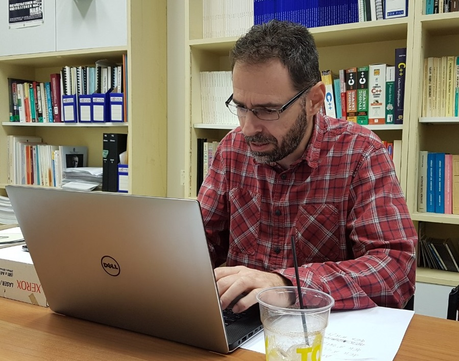

Dinos
Ferentinos
Dept.
of Agricultural Engineering
Institute
of Soil & Water Resources
Hellenic
Agricultural Organization “Demeter”
61
Dimokratias Av., Athens 13561, Greece
email:
kpf3 at cornell dot edu
Google
Shcolar profile CV
_____________________________________________________________________________________________________________________
Education
Research
interests
- Optimization, heuristic algorithms, artificial intelligence / machine learning
- Intelligent information systems in biosystems engineering
- Wireless
sensor networks
- Controlled
environment agriculture
Research/academic
positions
Current
position:
Past
positions:
- Researcher
(Grade C), Dept.
of Agricultural Engineering, Hellenic
Agricultural Organization “Demeter”, 2016 – 2020
- Visiting
Assoc. Professor, Dept.
of Agricultural Economics & Rural Development (Informatics
Lab), Agricultural
University of Athens, Spring 2020
- Visiting
Lecturer, Dept. of
Mathematics, University
of Athens, Spring 2017
- Research
Associate, Dept. of
Mathematics, University
of Athens, 2014-2015
- Research
Associate, Lab.
of Agricultural Constructions & Environmental Control,
University of Thessaly,
2013-2015
- Research
Associate, Informatics
Lab., Agricultural
University of Athens, 2011-2013
- Visiting
Asst. Professor, Dept.
of Informatics and Telecommunication Technology, Technological
Institute of the Ionian Islands, 2012-2013
- Visiting
Asst. Professor, Dept.
of Informatics in Administration & Economics, Technological
Institute of the Ionian Islands, 2010-2013
- Visiting
Lecturer, Informatics
Lab., Agricultural
University of Athens, 2008-2010
- Visiting
Lecturer, Dept. of
Mathematics, University
of Athens, 2005-2011
- Postdoctoral
Researcher, Informatics
Lab., Agricultural
University of Athens, 2005-2008
- Postdoctoral Researcher, Dept.
of Bio & Env Engineering, Cornell
University, 2003-2004
Teaching
- Programming
Languages (Java) - Univ. of Athens, Dept. of Mathematics
- Computer
Science I (MATLAB / Java / Python) - Univ.
of Athens, Dept. of Mathematics
- Algorithm
Design and Analysis - Univ.
of Athens, Dept. of Mathematics
- Computational
Complexity - Univ.
of Athens, Dept. of Mathematics
- Computational
Science and Technology - Univ.
of Athens, Dept. of Mathematics
- Computer
Science II (Java) - Univ. of Athens, Dept. of Mathematics
- Advanced
Programming (Java) - Technological
Institute of the Ionian Islands, Dept. of Informatics
- Object-oriented
Programming (C++) - Technological
Institute of the Ionian Islands, Dept. of Informatics
- Introduction
to Programming (C) - Technological
Institute of the Ionian Islands, Dept. of Informatics
- Introduction
to Algorithms - Technological
Institute of the Ionian Islands, Dept. of Informatics
- Programming
Languages (Python) – Agr. Univ. of Athens
- Introduction
to Computer Science - Agr.
Univ. of Athens & Technological Institute of Ionian Islands
- Biologically
Inspired Optimization - Cornell,
Dept. of Bio & Env Engineering
[graduate course]
- Introduction to Computing (Java)
- Cornell, Dept. of Bio &
Env Engineering
Book
translations:
___________________________
Last
update: July 2024